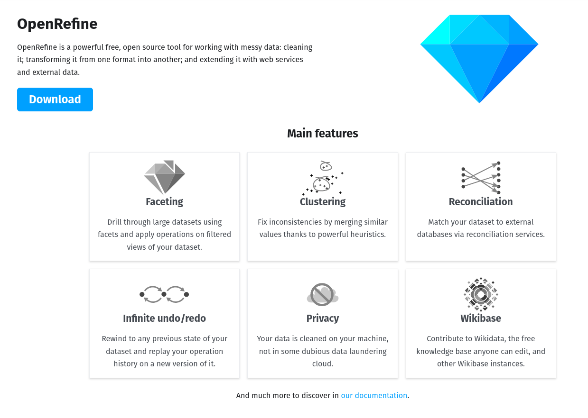

<!DOCTYPE html>
<html lang="en">
  <head>
    <meta charset="utf-8" />
    <meta name="viewport" content="width=device-width, initial-scale=1.0, maximum-scale=1.0, user-scalable=no" />

    <title>w7-7AAVDM52-acquisition&preprocessing</title>
    <link rel="stylesheet" href="dist/reveal.css" />
    <link rel="stylesheet" href="dist/theme/black.css" id="theme" />
    <link rel="stylesheet" href="plugin/highlight/zenburn.css" />
	<link rel="stylesheet" href="css/layout.css" />
	<link rel="stylesheet" href="plugin/customcontrols/style.css">
	<link rel="stylesheet" href="plugin/chalkboard/style.css">

	<link rel="stylesheet" href="plugin/reveal-pointer/pointer.css" />


    <script defer src="dist/fontawesome/all.min.js"></script>

	<script type="text/javascript">
		var forgetPop = true;
		function onPopState(event) {
			if(forgetPop){
				forgetPop = false;
			} else {
				parent.postMessage(event.target.location.href, "app://obsidian.md");
			}
        }
		window.onpopstate = onPopState;
		window.onmessage = event => {
			if(event.data == "reload"){
				window.document.location.reload();
			}
			forgetPop = true;
		}

		function fitElements(){
			const itemsToFit = document.getElementsByClassName('fitText');
			for (const item in itemsToFit) {
				if (Object.hasOwnProperty.call(itemsToFit, item)) {
					var element = itemsToFit[item];
					fitElement(element,1, 1000);
					element.classList.remove('fitText');
				}
			}
		}

		function fitElement(element, start, end){

			let size = (end + start) / 2;
			element.style.fontSize = `${size}px`;

			if(Math.abs(start - end) < 1){
				while(element.scrollHeight > element.offsetHeight){
					size--;
					element.style.fontSize = `${size}px`;
				}
				return;
			}

			if(element.scrollHeight > element.offsetHeight){
				fitElement(element, start, size);
			} else {
				fitElement(element, size, end);
			}		
		}


		document.onreadystatechange = () => {
			fitElements();
			if (document.readyState === 'complete') {
				if (window.location.href.indexOf("?export") != -1){
					parent.postMessage(event.target.location.href, "app://obsidian.md");
				}
				if (window.location.href.indexOf("print-pdf") != -1){
					let stateCheck = setInterval(() => {
						clearInterval(stateCheck);
						window.print();
					}, 250);
				}
			}
	};


        </script>
  </head>
  <body>
    <div class="reveal">
      <div class="slides"><section  data-markdown><script type="text/template"><!-- .slide: class="drop" -->
<div class="" style="position: absolute; left: 0px; top: 0px; height: 1199px; width: 1920px; min-height: 1199px; display: flex; flex-direction: column; align-items: center; justify-content: center" absolute="true">

# Data Acquisition and Pre-processing
## Data Visualisation ― week 7


[Dr Daniel Chávez Heras](https://movingpixel.net/)

[7AAVDM52](https://keats.kcl.ac.uk/course/view.php?id=108839)

2023-24
</div>

<aside class="notes"><p>This session introduces students to the initial stages of data visualization: acquiring and cleaning data. Students will learn how to source data from various repositories and understand the importance of cleaning and preparing data for visualization. The focus will be on identifying and handling missing values, outliers, and errors in data sets.</p>
</aside></script></section><section  data-markdown><script type="text/template"><!-- .slide: class="has-dark-background drop" data-background-color="#2b1804" -->
<div class="" style="position: absolute; left: 0px; top: 0px; height: 1199px; width: 1920px; min-height: 1199px; display: flex; flex-direction: column; align-items: center; justify-content: center" absolute="true">

# The road ahead

<div class="callout callout-color8">
<div class="callout-title">
<div class="callout-icon">

<i class="fas fa-list" ></i>


</div>
<div class="callout-title-inner">

In today's lecture:  

</div>
</div>
<div class="callout-content">

1. Life cycle of data

2. Exploratory and explanatory visualisation

3. Pre-processing tools and techniques

4. Final projects presentation

5. Questions

</div>
</div>
</div></script></section><section  data-markdown><script type="text/template"><!-- .slide: class="has-dark-background drop" data-background-color="#304f5e" -->
<div class="" style="position: absolute; left: 0px; top: 0px; height: 1199px; width: 1920px; min-height: 1199px; display: flex; flex-direction: column; align-items: center; justify-content: center" absolute="true">

# 1. Life cycle of data

<i class="fas fa-recycle fa-4x" ></i>
</div></script></section><section  data-markdown><script type="text/template"><!-- .slide: class="drop" -->
<div class="" style="position: absolute; left: 0px; top: 0px; height: 1199px; width: 1920px; min-height: 1199px; display: flex; flex-direction: column; align-items: center; justify-content: center" absolute="true">

<i class="fas fa-quote-left fa-2x" ></i>


>All models are **wrong**, but some are **useful**.
>
>Since all models are wrong the scientist must be alert to what is importantly wrong. It is inappropriate to be concerned about safety from mice when there are tigers abroad.

<i class="fas fa-quote-right fa-2x" ></i>


\- Attributed to George Box, [Science and Statistics](http://www-sop.inria.fr/members/Ian.Jermyn/philosophy/writings/Boxonmaths.pdf), 1976.
</div></script></section><section  data-markdown><script type="text/template"><!-- .slide: class="drop" -->
<div class="" style="position: absolute; left: 0px; top: 0px; height: 1199px; width: 1920px; min-height: 1199px; display: flex; flex-direction: column; align-items: center; justify-content: center" absolute="true">

## The bigger picture


</div>

<aside class="notes"><p>Visualisation as part of a larger process</p>
</aside></script></section><section  data-markdown><script type="text/template"><!-- .slide: class="drop" -->
<div class="" style="position: absolute; left: 0px; top: 0px; height: 1199px; width: 1920px; min-height: 1199px; display: flex; flex-direction: column; align-items: center; justify-content: center" absolute="true">

# A virtuous <mark>cycle</mark>

1. Collection
2. Pre-processing (cleaning)
3. Analysis
4. Visualisation
</div></script></section><section  data-markdown><script type="text/template"><!-- .slide: class="drop" -->
<div class="" style="position: absolute; left: 0px; top: 0px; height: 1199px; width: 1920px; min-height: 1199px; display: flex; flex-direction: column; align-items: center; justify-content: center" absolute="true">

# Data is <mark>made</mark> useful


- **Validity**
	- The degree to which your data conforms to defined rules or constraints.
- **Accuracy** 
	- The degree to which it is close to the true values.
- **Completeness** 
	- The degree to which all required data is known.
- **Consistency**
	- The degree wot which data is consistent within the same dataset and/or across multiple data sets.
- **Uniformity**
	- The degree to which the data is specified using the same unit of measure.
</div></script></section><section  data-markdown><script type="text/template"><!-- .slide: class="has-dark-background drop" data-background-color="#304f5e" -->
<div class="" style="position: absolute; left: 0px; top: 0px; height: 1199px; width: 1920px; min-height: 1199px; display: flex; flex-direction: column; align-items: center; justify-content: center" absolute="true">

# 2. Exploratory and explanatory visualisation

<i class="far fa-compass fa-4x" ></i>
</div></script></section><section  data-markdown><script type="text/template"><!-- .slide: class="drop" -->
<div class="" style="position: absolute; left: 0px; top: 0px; height: 1199px; width: 1920px; min-height: 1199px; display: flex; flex-direction: column; align-items: center; justify-content: center" absolute="true">

### exploratory mode

</div></script></section><section  data-markdown><script type="text/template"><!-- .slide: class="drop" -->
<div class="" style="position: absolute; left: 0px; top: 0px; height: 1199px; width: 1920px; min-height: 1199px; display: flex; flex-direction: column; align-items: center; justify-content: center" absolute="true">

The starting point of visualisation
- what is the shape?
- what are its limits? where does is begin and does it end? 
- where does it come from? when was it made? 
- who **made** it the way it is? 
- why? what were they trying to know/solve/fix/unders
</div>

<aside class="notes"><p><a href="https://en.wikipedia.org/wiki/John_W._Tukey">John W. Tukey</a> wrote the book <em>Exploratory Data Analysis</em> in 1977.</p>
</aside></script></section><section  data-markdown><script type="text/template"><!-- .slide: class="drop" -->
<div class="" style="position: absolute; left: 0px; top: 0px; height: 1199px; width: 1920px; min-height: 1199px; display: flex; flex-direction: column; align-items: center; justify-content: center" absolute="true">


Reference: [Cook, D.](https://en.wikipedia.org/wiki/Dianne_Cook_(statistician) "Dianne Cook (statistician)") and [Swayne, D.F.](https://en.wikipedia.org/wiki/Deborah_F._Swayne "Deborah F. Swayne") (with A. Buja, D. Temple Lang, H. Hofmann, H. Wickham, M. Lawrence) (2007) "Interactive and Dynamic Graphics for Data Analysis: With R and GGobi" Springer, 978-0387717616.
</div>

<aside class="notes"><p>The analysis task is to find the variables which best predict the tip that a dining party will give to the waiter.12(<a href="https://en.wikipedia.org/wiki/Exploratory_data_analysis#cite_note-12">https://en.wikipedia.org/wiki/Exploratory_data_analysis#cite_note-12</a>). The variables available in the data collected for this task are: the tip amount, total bill, payer gender, smoking/non-smoking section, time of day, day of the week, and size of the party. The primary goal is to predict the tip a waiter will get.</p>
</aside></script></section><section  data-markdown><script type="text/template"><!-- .slide: class="drop" -->
<div class="" style="position: absolute; left: 0px; top: 0px; height: 1199px; width: 1920px; min-height: 1199px; display: flex; flex-direction: column; align-items: center; justify-content: center" absolute="true">


Reference: [Cook, D.](https://en.wikipedia.org/wiki/Dianne_Cook_(statistician) "Dianne Cook (statistician)") and [Swayne, D.F.](https://en.wikipedia.org/wiki/Deborah_F._Swayne "Deborah F. Swayne") (with A. Buja, D. Temple Lang, H. Hofmann, H. Wickham, M. Lawrence) (2007) "Interactive and Dynamic Graphics for Data Analysis: With R and GGobi" Springer, 978-0387717616.
</div></script></section><section  data-markdown><script type="text/template"><!-- .slide: class="drop" -->
<div class="" style="position: absolute; left: 0px; top: 0px; height: 1199px; width: 1920px; min-height: 1199px; display: flex; flex-direction: column; align-items: center; justify-content: center" absolute="true">

### explanatory mode


The end point of visualisation
- how does this connect logically to that?
- why is this connection important or useful?
- important to whom? useful for what?
- what can they know/understand/accomplish?
</div>

<aside class="notes"><p>why do female non-smoking tippers are so consistent?
what is different about the three outliers?
how can we find out? can we conduct experiments? etc.</p>
</aside></script></section><section  data-markdown><script type="text/template"><!-- .slide: class="has-dark-background drop" data-background-color="#304f5e" -->
<div class="" style="position: absolute; left: 0px; top: 0px; height: 1199px; width: 1920px; min-height: 1199px; display: flex; flex-direction: column; align-items: center; justify-content: center" absolute="true">

# 3. Pre-processing tools and techniques

<i class="fas fa-tools fa-4x" ></i>
</div></script></section><section  data-markdown><script type="text/template"><!-- .slide: class="drop" -->
<div class="" style="position: absolute; left: 0px; top: 0px; height: 1199px; width: 1920px; min-height: 1199px; display: flex; flex-direction: column; align-items: center; justify-content: center" absolute="true">

# Tools

- MS Excel
- [OpenRefine](https://openrefine.org/)
- [R](https://www.r-project.org/)
- [Pandas (for Python)](https://pandas.pydata.org/)
</div>

<aside class="notes"><p>in order of technical difficulty</p>
</aside></script></section><section  data-markdown><script type="text/template"><!-- .slide: class="drop" -->
<div class="" style="position: absolute; left: 0px; top: 0px; height: 1199px; width: 1920px; min-height: 1199px; display: flex; flex-direction: column; align-items: center; justify-content: center" absolute="true">


</div></script></section><section  data-markdown><script type="text/template"><!-- .slide: class="drop" -->
<div class="" style="position: absolute; left: 0px; top: 0px; height: 1199px; width: 1920px; min-height: 1199px; display: flex; flex-direction: column; align-items: center; justify-content: center" absolute="true">

# Techniques

- **Imputation**
	- How to replace missing data? from simple techniques like mean or median imputation, to more complex ones like regression imputation or multiple imputation.
- **Deduplication**
	- Identifying and removing duplicate records from the dataset.
- **Standardisation**
	- Bringing inconsistent data to a common standard. For example, all dates can be formatted to the same style.
- **Outlier Treatment**
	- What to do about outliers? remove them, transform them, or treat them as a separate group?
- **Feature Selection**
	- Selecting only the relevant variables for analysis. Identify what is needed from what is not.
</div></script></section><section  data-markdown><script type="text/template"><!-- .slide: class="has-dark-background drop" data-background-color="#304f5e" -->
<div class="" style="position: absolute; left: 0px; top: 0px; height: 1199px; width: 1920px; min-height: 1199px; display: flex; flex-direction: column; align-items: center; justify-content: center" absolute="true">

# 3.1 Example (Python)

<i class="fab fa-python fa-4x" ></i>
</div>

<aside class="notes"><p>Jupyter notebotebook</p>
</aside></script></section><section  data-markdown><script type="text/template"><!-- .slide: class="has-dark-background drop" data-background-color="#2b1804" -->
<div class="" style="position: absolute; left: 0px; top: 0px; height: 1199px; width: 1920px; min-height: 1199px; display: flex; flex-direction: column; align-items: center; justify-content: center" absolute="true">

# The road behind

<div class="callout callout-color2">
<div class="callout-title">
<div class="callout-icon">

<i class="fas fa-fire-alt" ></i>


</div>
<div class="callout-title-inner">

In summary:

</div>
</div>
<div class="callout-content">

- Data visualisation is part of the larger life cycle of data, in which it is acquired,transformed, and analysed for specific purposes.

- We can distinguish two modes of visualisation at either end of the cycle: exploratory and explanatory. These are not mutually exclusive and usually actualise each other.

- Pre-processing is usually the first step to kick off the cycle.

- There are many tools and techniques to pre-process data, with varying degrees of flexibility, cost, and technical skills needed.

</div>
</div>
</div></script></section><section  data-markdown><script type="text/template"><!-- .slide: class="has-dark-background drop" data-background-color="#304f5e" -->
<div class="" style="position: absolute; left: 0px; top: 0px; height: 1199px; width: 1920px; min-height: 1199px; display: flex; flex-direction: column; align-items: center; justify-content: center" absolute="true">

# 4. Final projects

<i class="fas fa-tasks fa-4x" ></i>
</div></script></section><section  data-markdown><script type="text/template"><!-- .slide: class="drop" -->
<div class="" style="position: absolute; left: 0px; top: 0px; height: 1199px; width: 1920px; min-height: 1199px; display: flex; flex-direction: column; align-items: center; justify-content: center" absolute="true">

1. [Visualising social networks](https://slides.movingpixel.net/rendered/w7-7AAVDM52-acquisition&preprocessing/projects/project1.html)
2. [Urban green space and public health](https://slides.movingpixel.net/rendered/w7-7AAVDM52-acquisition&preprocessing/projects/project2.html)
3. [The digital divide in education](https://slides.movingpixel.net/rendered/w7-7AAVDM52-acquisition&preprocessing/projects/project3.html)
4. [Crime patterns in major cities](https://slides.movingpixel.net/rendered/w7-7AAVDM52-acquisition&preprocessing/projects/project4.html)
5. [Gender representation in film and TV](https://slides.movingpixel.net/rendered/w7-7AAVDM52-acquisition&preprocessing/projects/project5.html)
6. [Environmental changes in the Amazon](https://slides.movingpixel.net/rendered/w7-7AAVDM52-acquisition&preprocessing/projects/project6.html)
7. [Climate change through art](https://slides.movingpixel.net/rendered/w7-7AAVDM52-acquisition&preprocessing/projects/project7.html)
</div></script></section><section  data-markdown><script type="text/template"><!-- .slide: class="drop" -->
<div class="" style="position: absolute; left: 0px; top: 0px; height: 1199px; width: 1920px; min-height: 1199px; display: flex; flex-direction: column; align-items: center; justify-content: center" absolute="true">

# Questions?
<i class="far fa-question-circle fa-4x" ></i>
</div>

<aside class="notes"><p>bye!</p>
</aside></script></section></div>
    </div>

    <script src="dist/reveal.js"></script>

    <script src="plugin/markdown/markdown.js"></script>
    <script src="plugin/highlight/highlight.js"></script>
    <script src="plugin/zoom/zoom.js"></script>
    <script src="plugin/notes/notes.js"></script>
    <script src="plugin/math/math.js"></script>
	<script src="plugin/mermaid/mermaid.js"></script>
	<script src="plugin/chart/chart.min.js"></script>
	<script src="plugin/chart/plugin.js"></script>
	<script src="plugin/menu/menu.js"></script>
	<script src="plugin/customcontrols/plugin.js"></script>
	<script src="plugin/chalkboard/plugin.js"></script>
	<script src="plugin/reveal-pointer/pointer.js"></script>
	<script src="plugin/elapsed-time-bar/elapsed-time-bar.js"></script>

    <script>
      function extend() {
        var target = {};
        for (var i = 0; i < arguments.length; i++) {
          var source = arguments[i];
          for (var key in source) {
            if (source.hasOwnProperty(key)) {
              target[key] = source[key];
            }
          }
        }
        return target;
      }

	  function isLight(color) {
		let hex = color.replace('#', '');

		// convert #fff => #ffffff
		if(hex.length == 3){
			hex = `${hex[0]}${hex[0]}${hex[1]}${hex[1]}${hex[2]}${hex[2]}`;
		}

		const c_r = parseInt(hex.substr(0, 2), 16);
		const c_g = parseInt(hex.substr(2, 2), 16);
		const c_b = parseInt(hex.substr(4, 2), 16);
		const brightness = ((c_r * 299) + (c_g * 587) + (c_b * 114)) / 1000;
		return brightness > 155;
	}

	var bgColor = getComputedStyle(document.documentElement).getPropertyValue('--r-background-color').trim();
	var isLight = isLight(bgColor);

	if(isLight){
		document.body.classList.add('has-light-background');
	} else {
		document.body.classList.add('has-dark-background');
	}

      // default options to init reveal.js
      var defaultOptions = {
        controls: true,
        progress: true,
        history: true,
        center: true,
        transition: 'default', // none/fade/slide/convex/concave/zoom
        plugins: [
          RevealMarkdown,
          RevealHighlight,
          RevealZoom,
          RevealNotes,
          RevealMath.MathJax3,
		  RevealMermaid,
		  RevealChart,
		  RevealCustomControls,
		  RevealMenu,
	      RevealPointer,
		  RevealChalkboard, 
		  ElapsedTimeBar
        ],


    	allottedTime: 120 * 1000,

		mathjax3: {
			mathjax: 'plugin/math/mathjax/tex-mml-chtml.js',
		},
		markdown: {
		  gfm: true,
		  mangle: true,
		  pedantic: false,
		  smartLists: false,
		  smartypants: false,
		},

		mermaid: {
			theme: isLight ? 'default' : 'dark',
		},

		customcontrols: {
			controls: [
				{id: 'toggle-overview',
				title: 'Toggle overview (O)',
				icon: '<i class="fa fa-th"></i>',
				action: 'Reveal.toggleOverview();'
				},
				{ icon: '<i class="fa fa-pen-square"></i>',
				title: 'Toggle chalkboard (B)',
				action: 'RevealChalkboard.toggleChalkboard();'
				},
				{ icon: '<i class="fa fa-pen"></i>',
				title: 'Toggle notes canvas (C)',
				action: 'RevealChalkboard.toggleNotesCanvas();'
				},
			]
		},
		menu: {
			loadIcons: false
		}
      };

      // options from URL query string
      var queryOptions = Reveal().getQueryHash() || {};

      var options = extend(defaultOptions, {"width":1920,"height":1199,"margin":0,"controls":true,"progress":true,"slideNumber":true,"transition":"slide","transitionSpeed":"default"}, queryOptions);
    </script>

    <script>
      Reveal.initialize(options);
    </script>
  </body>

  <!-- created with Advanced Slides -->
</html>
